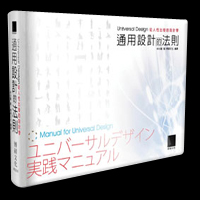
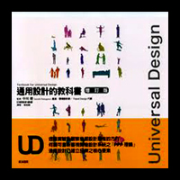

| 相關書籍 |
|  |  |
| 這是什麼?? |
|
話說＜通用設計＞定義是什麼，當同學們還不清楚時同學說：「方便殘障人士能用的設計，也 有人說：「是方便老人家能使用的設計」，還有人說：「是大家都能用的設計」，老師笑了笑 ^v^說：「所以是我們日常的生活用品也都可以叫通用設計囉?!」同學們聽完一臉茫然的神情 看著老師。 |
{kind=link}
{kind=link}
| 關於通用設計 |
|
說到「通用設計」（Universal Design），簡稱UD，它也有其他稱呼全民設計、通用化設計、全方位設計。所謂的通用設計，就是盡可能設計讓所有人都能使用但不是絕對。而所謂的所有的定義大致包含不同文化、不同語言、有無傷殘、不同能力、長幼不同、男女不同，因應各種不同類的人都能方便且自在、容易使用的設計。
每人都會成長，心理和生理都有階段性的變化，每個階段都不一樣，有時會有不方便的時刻，例如：騎車受傷時＜突然被人撞到腳骨折或扭傷＞、坐公車摔倒時＜煞車沒站穩導致手脫臼＞、突然耳鳴時＜可能洗澡時進水或突然大聲的噪音導致＞、眼睛突然暫時性模糊或失明時＜可能虹彩炎或視網膜血管栓塞＞、手指受傷時＜被紙割到＞，這些在生活中只是偶爾會發生，每個人會老、會累、會受傷，意外無所不在，所以人總是有不方便的時刻，而這不方便的時刻你永遠不知何時會發生，而使用或設計產品時考慮到了通用設計，或許現在用不到，可能有一天你會突然用到或著是下半輩子都用得到，講到這感覺好沉重，你可能會想怎麼了？是在賣保險嗎？喔∼∼∼不，我只是提醒你或許可以想想選用有通用設計概念的產品也不錯。 |
| 通用設計歷史 |
|
通用設計的演進始於1950年代，當時人們開始注意殘障問題。在日本、歐洲及美國，「
無障礙空間設計」（barrier-free design）為身體障礙者除去了存在環境中的各種障礙。
在1970年代時，歐洲及美國一開始是採用「廣泛設計」（accessible design），針對在不
良於行的人士在生活環境上之需求，並不是針對產品。當時一位美國建築師麥可•貝奈（Mi
chael Bednar）提出：撤除了環境中的障礙後，每個人的官能都可獲得提升。他認為建立一
個超越廣泛設計且更廣泛、全面的新觀念是必要的。也就是說廣泛設計一詞並無法完整說明
他們的理念。
|
| 七項原則 |
|
|
| 三項附則 |
|
|